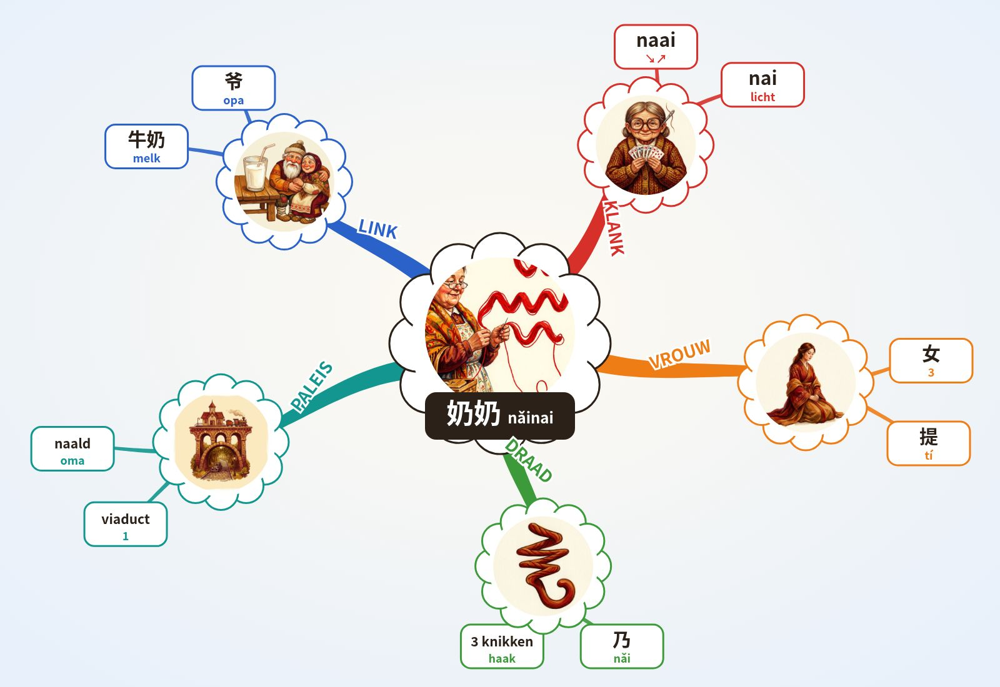

WOORD DIEPTE 4.6 · Chinese leren 4.6
奶奶 nǎinai · 3+0 · oma (vaders moeder)
Formule
Chinees: Mandarijn, moedertaalstem. NL/EN/ES: klank-haken, geen vertaling.
Klank-haken NL · EN · ES
NL naai ↘↗ + nai (licht): “Naai... oma naait mijn knoop eraan.”
EN nigh? ↘↗ + nigh (light): “Nigh? Grandma is nigh, she is near.”
ES ¿naipe? ↘↗ (nai-) + nai (suave): “¿Naipes? La abuela juega a los naipes.”
→ 1e toon hoog en vlak · ↗ 2e toon stijgt · ↘↗ 3e toon zakt en veert terug · ↘ 4e toon valt hard · licht = neutrale toon.
Paleis · Lorentz Lyceum, 10 stops
- Spoorviaduct het hele station hangt boven de Metamorfosenallee
- Stationsgebouw verkeersgebouw van Edwin Megens, 2005
- Beschilderde pijlers muurschildering 2024: groen, geschiedenis, wijk
- Metalen gevel Lorentz gevelsysteem van Rakon (?)
- Cruijff-court kooiveld op het schoolplein
- Glaswand aula grote glazen buitenwand
- Zittrap brede trap die tribune is
- Vleugel vleugel in de aula
- Atrium hart van de school, grafische prints op de wanden
- Zwevende gymzaal sportzaal opgetild naar de 1e verdieping
O'Brien: 1 Boven op het spoorviaduct zit oma te naaien; haar draad knikt drie keer (乃) en hangt tot op de straat. IK roep: naai ↘↗, nai.
Alleen echte, unieke kenmerken (monument-regel). (?) = niet zeker.
Mindmap (Buzan)

Buzan: centraal beeld · gebogen takken, dik bij het midden · 1 woord per lijn · beeld per tak · kleur per tak · radiaal, met de klok mee vanaf KLANK.
3 schrift · streken
女 vrouw, betekenisdeel · 乃 nǎi, klankdeel
Oefen met je vinger
Tik op Oefen en teken streek 1.
Streken · namen
De hanzi bij elke streek is de officiële streeknaam die je in elk Chinees schrijfboek vindt, geen lesstof. Tik of houd de naam vast voor de betekenis.
Opbouw · 奶 = 女 3 + 乃 2 (2×)
Rood = de nieuwe streek.
Streekvragen
Verbindingen (andere woorden)
Geschiedenis
Twijfel
4 beeld
IK zie oma naaien met een draad die drie keer knikt.
Scène (Lorentz)
5 actief recall
Recall-tabel
| Nr | Hersenen | Teken | Station | Volgende |
|---|---|---|---|---|
| 1 | Leerling A | 奶 | Spoorviaduct | shǒujī |
Dek de kaart af. Loop het paleis, zeg klank + toon, schrijf het teken op papier. Pas daarna verder.